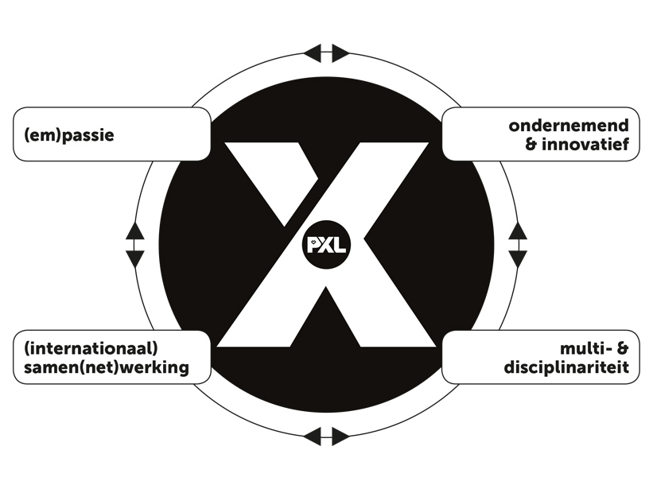

Al sinds het middelbaar hou ik mij bezig met informatica. Ik heb dan ook in mijn 5de en 6de jaar Informaticabeheer gevolgd. Na deze opleiding stelde ik mezelf een aantal vragen. Zo wist ik totaal nog niet hoe dat projecten in zijn werk gingen. Ook had ik geen flauw idee hoe je in team moest werken. Dankzij PXL kan ik nu perfect een project starten. Mijn kennis is zoveel uitgebreider. Zowel op vlak van hardskills als softskills.
Doorheen mijn hogeschool carrière heb ik mezelf altijd 100% ingezet. Zo heb ik vele seminaries gevolgd en vele kansen gegrepen die ik kreeg door PXL. Hierdoor is mijn passie voor informatica alleen maar gegroeid. Zo probeer ik zelf ook zoveel mogelijk te leren op mezelf, om toch altijd mee te zijn met de nieuwste trends. Als ik mijn examenresultaten bekijk, kan ik ook met zekerheid zeggen dat deze passie gegrond is.
Ook na de lesuren heb ik geprobeerd mezelf innovatief te ontwikkelen en ondernemend te zijn. Tijdens mijn periode op PXL heb ik geprobeerd mijn kennis zo veel mogelijk uit te breiden. Zo heb ik vele seminaries en online cursussen gevolgd. Sommige van deze seminaries heb ik op eigen initiatief gedaan. Het constant willen bijleren is ondertussen al een gewoonte geworden die ik met plezier ga doortrekken naar de toekomst toe.
Doorheen mijn loopbaan aan de PXL zijn er vele internationale kansen geweest. Ik heb deze dan ook met beide handen gegrepen. Zo zal ik de busIT-week nooit vergeten. In deze week heb ik enorm veel plezier gehad en vele mensen leren kennen. Het was dan ook fijn om eens op internationaal niveau een project te kunnen uitwerken. De studentenreis is ook een kans die elke student zou moeten grijpen. Het is een reis waarin je zoveel plezier maakt en waarin dat de groepsband hard wordt versterkt.
Het laatste jaar was het hoogtepunt van mijn hogeschool carrière. Dit is het jaar waarin ik het meeste heb geleerd. Zowel op vlak van programmeren als op vlak van softskills. Zo heb ik tijdens het IT-project mogen werken met een enorm fijn team. Tijdens dit project heb ik pas echt geleerd hoe het is om in een team te werken. De vele presentaties en kleine projecten tijdens de lessen hadden mij al geleerd om meer uit mijn schulp te komen. Maar het was pas tijdens het IT-project dat dit volledig was gelukt. Het IT-project en de stage hebben er dan ook voor gezorgd dat ik mezelf multidisciplinair kon ontwikkelen.

Deze opleiding heeft mij zoveel meer geleerd dan dat ik initieel dacht. Zo kan ik nu op het einde zeggen dat ik perfect een project kan opstellen. Vroeger hield ik mezelf ook wat meer afzijdig in groepsverband. Dit is volledig verdwenen. Ik zal wel nog niet direct een leiderspositie opnemen maar ik ben wel altijd sterk betrokken op de activiteiten. In teamverband werken is dan ook geen enkel probleem meer.
Zonder het echt door te hebben, ben ik gegroeid in alle vier pijlers van de X-factor. Ik hoop dan ook dat ik mezelf in de toekomst kan blijven ontwikkelen aan de hand van de X-factor. Nu kan ik met trots zeggen dat ik doorheen deze studies ben uitgegroeid tot een allround ontwikkelaar. Ik wil PXL dan ook bedanken voor al de kansen en activiteiten die mij hebben gemaakt tot wie ik nu ben.